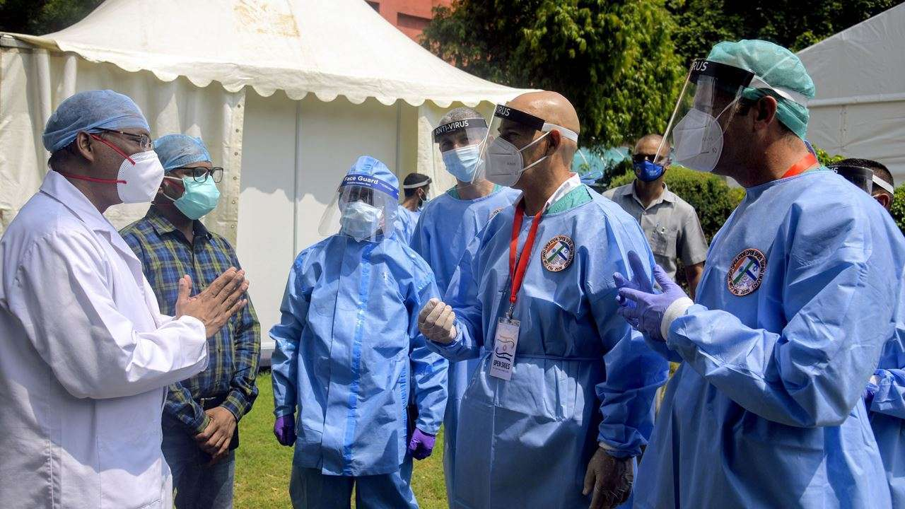

মার্চ মাসের তৃতীয় সপ্তাহ থেকে বাংলাদেশে করোনা ভাইরাসের সংক্রমণ বেড়েছে।
বাংলাদেশে করোনা ভাইরাস শনাক্তের ক্ষেত্রে ৮১ শতাংশই দক্ষিণ আফ্রিকার ভ্যারিয়েন্ট বলে যে দাবি করা হয়েছিল সরকারের একটি গবেষণা সংস্থা তার সঙ্গে দ্বিমত প্রকাশ করছে।
বাংলাদেশের রোগতত্ত্ব, রোগ নিয়ন্ত্রণ ও গবেষণা ইন্সটিটিউট-এর প্রধান বৈজ্ঞানিক কর্মকর্তা ড. এএমএম আলমগীর বিবিসি বাংলাকে বলেন, বাংলাদেশে শনাক্ত হওয়া করোনা ভাইরাসের মধ্যে ৮১ শতাংশই দক্ষিণ আফ্রিকার ভ্যারিয়েন্ট হিসেবে যে তথ্য দেয়া হয়েছিল সেটি ছিল 'অসম্পূর্ণ'। গত ৭ই এপ্রিল আইসিডিডিআর,বি তার ওয়েবসাইটে প্রকাশিত এক খবরে জানিয়েছে, তারা ডিসেম্বর মাস থেকে স্বাস্থ্য অধিদপ্তর এবং আইইডিসিআরের সঙ্গে মিলে করোনা ভাইরাসের বিভিন্ন ভ্যারিয়ান্টের ওপর নজরদারি শুরু করে।
বাংলাদেশের রোগতত্ত্ব, রোগ নিয়ন্ত্রণ ও গবেষণা ইন্সটিটিউট-এর প্রধান বৈজ্ঞানিক কর্মকর্তা ড. এএমএম আলমগীর বিবিসি বাংলাকে বলেন, বাংলাদেশে শনাক্ত হওয়া করোনা ভাইরাসের মধ্যে ৮১ শতাংশই দক্ষিণ আফ্রিকার ভ্যারিয়েন্ট হিসেবে যে তথ্য দেয়া হয়েছিল সেটি ছিল 'অসম্পূর্ণ'। গত ৭ই এপ্রিল আইসিডিডিআর,বি তার ওয়েবসাইটে প্রকাশিত এক খবরে জানিয়েছে, তারা ডিসেম্বর মাস থেকে স্বাস্থ্য অধিদপ্তর এবং আইইডিসিআরের সঙ্গে মিলে করোনা ভাইরাসের বিভিন্ন ভ্যারিয়ান্টের ওপর নজরদারি শুরু করে।
>দুই সপ্তাহ আগে আইসিডিডিআর,বি বলছে, দক্ষিণ আফ্রিকা ভ্যারিয়েন্টের আবির্ভাব বাংলাদেশে ভাইরাসের প্রসারের ক্ষেত্রে নাটকীয় পরিবর্তন আনে।মার্চের চতুর্থ সপ্তাহেই দেখা যায়, দেশে শনাক্ত করোনাভাইরাসের ধরনগুলোর মধ্যে এখন ৮১ শতাংশই দক্ষিণ আফ্রিকার ভ্যারিয়ান্ট। এখন আইইডিসিআর'র প্রধান বৈজ্ঞানিক কর্মকর্তা ড. আলমগীর বলেন, তখন ১১০টি নমুনা সিকোয়েন্স করে বলা হয়েছিল ৮১ শতাংশ দক্ষিণ আফ্রিকার ভ্যারিয়েন্ট। কিন্তু পরবর্তীতে সবমিলিয়ে ৫৫০টির বেশি সিকোয়েন্স করা হয়েছে।
বিশেষজ্ঞরা বলেছেন, দক্ষিণ আফ্রিকা এবং ইউকে ভ্যারিয়েন্ট অধিক সংক্রমণশীল। বিশেষজ্ঞরা একটি বিষয়ে একমত হয়েছেন যে দক্ষিণ আফ্রিকার ভ্যারিয়েন্টের প্রভাবের কারণেই বাংলাদেশে করোনা ভাইরাস সংক্রমণ দ্রুত হয়েছে।
 এর মধ্যে দক্ষিণ আফ্রিকার ভ্যারিয়েন্ট প্রভাব বিস্তার করেছে, যেটি ২০থেকে ৩০ শতাংশ।
তবে এ বিষয়ে আইসিডিডিআর,বির কোন বক্তব্য পাওয়া যায়নি।
ড.আলমগীর বলেন, আইইডিসিআর, চাইল্ড হেলথ রিসার্চ ফাউন্ডেশন এবং আইসিডিডিআর,বি - পরস্পরের সাথে তথ্য আদান প্রদান করে।
Facebook.com
এর মধ্যে দক্ষিণ আফ্রিকার ভ্যারিয়েন্ট প্রভাব বিস্তার করেছে, যেটি ২০থেকে ৩০ শতাংশ।
তবে এ বিষয়ে আইসিডিডিআর,বির কোন বক্তব্য পাওয়া যায়নি।
ড.আলমগীর বলেন, আইইডিসিআর, চাইল্ড হেলথ রিসার্চ ফাউন্ডেশন এবং আইসিডিডিআর,বি - পরস্পরের সাথে তথ্য আদান প্রদান করে।
Facebook.com